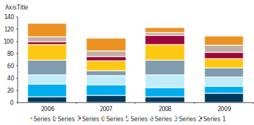
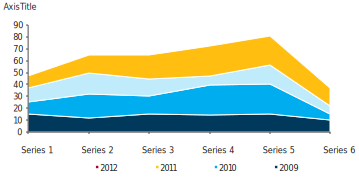

After slowing in mid-July, the big 2016 rally in credit has resumed in the past two weeks. The US Corporate index touched 147bp on August 2, following a brief sell-off, but has rallied to 138bp since then. The US High Yield index experienced a similar pause, but the price has now risen to $98.8, the highest level since June 2015. The recent context of supportive technicals and adequate economic and corporate fundamentals continues to be the dominant driver of spread performance.
CDS index options provide the right to buy or sell index protection at a predetermined strike and time in the future.They are broadly similar to options on equity indices, with the terminology and quotation similar to that of interestrate swaptions.
FIGURE 1. Sample Table
| General Electric (GE) | 2017 | 2016 | 2015 |
|---|---|---|---|
| Aquisition related charges | 300 | 100 | 200 |
| Operating expenses | 100 | 145 | 690 |
Caption for table above.
Position for Mediocre Growth
The market for CDS options has experienced significant growth in recent years, evolving from what used to be mostlya one-way market into a much more balanced market with the emergence of natural option buyers and sellers.
CDS index options provide the right to buy or sell index protection at a predetermined strike and time in the future. They are broadly similar to options on equity indices, with the terminology and quotation similar to that of interest rate swaptions.
- CDS options are available for the following CDS indices: CDX.IG and CDX.HY in the US; and iTraxx Main; iTraxx Crossover; and iTraxx Senior Financial in Europe.
- CDS Option Basics. We introduce the basic terminology for CDS options (more commonly referred to as ‘payers’ and ‘receivers’)and review their payoff profiles at expiry. We also review quotation and trading mechanics and break down the componentsof a sample CDS option run.
- Common Trades. We review a large range of CDS option trades, covering hedging of existing index positions, implementing moreefficient directional trades than is possible with an index trade, and we discuss how CDS options can be used to implement very specific relative value views between, for example, high grade and high yield.
FIGURE 1. Russia Slowdown in inflation supports key rate cuts
Caption for chart above.
CDS index options provide the right to buy or sell index protection at a predetermined strike and time in the future. Theyare broadly similar to options on equity indices, with the terminology and quotation similar to that of interest rate swaptions. Common Trades. We review a large range of CDS option trades, covering hedging of existing index positions, implementing more efficient directional trades than is possible with an index trade, and we discuss how CDS optionscan be used to implement very specific relative value views between, for example, high grade and high yield.
CDS index options provide the right to buy or sell index protection at a predetermined strike and time in the future. Theyare broadly similar to options on equity indices, with the terminology and quotation similar to that of interest rate swaptions. Common Trades. We review a large range of CDS option trades, covering hedging of existing index positions, implementing more efficient directional trades than is possible with an index trade, and we discuss how CDS optionscan be used to implement very specific relative value views between, for example, high grade and high yield.
From 2005 to 2012, the average student loan balance rose more than 70 percent for Americans ages 40 to 49, going from about $16,000 to about $28,000, according to data from the Federal Reserve Bank of New York. 3 Those figures aren’t adjusted for inflation, but that accounts for only about a quarter of the increase according to authorities. No economic agent likes uncertainty. They don't invest, they don't hire, they don't make decisions in times of uncertainty.
No economic agent likes uncertainty. They don't invest, they don't hire, they don't make decisions in times of uncertainty.- George Washington
The market for CDS options has experienced significant growth in recent years, evolving from what used to be mostlya one-way market into a much more balanced market with the emergence of natural option buyers and sellers. Common Trades. We review a large range of CDS option trades, covering hedging of existing index positions, implementing more efficient directional trades than is possible with an index trade, and we discuss how CDS options can be used to implement very specific relative value views between, for example, high grade and high yield.
FIGURE 1. Russia Slowdown in inflation supports key rate cuts
Caption for the left side
FIGURE 2. Russia Slowdown in inflation supports key rate cuts
Caption for the right side
CDS index options provide the right to buy or sell index protection at a predetermined strike and time in the future. They are broadly similar to options on equity indices, with the terminology and quotation similar to that of interest rateswaptions. Common Trades. We review a large range of CDS option trades, covering hedging of existing index positions, implementing more efficient directional trades than is possible with an index trade, and we discuss how CDS optionscan be used to implement very specific relative value views between, for example, high grade and high yield.
CDS index options provide the right to buy or sell index protection at a predetermined strike and time in the future. They are broadly similar to options on equity indices, with the terminology and quotation similar to that of interest rateswaptions. Common Trades. We review a large range of CDS option trades, covering hedging of existing index positions, implementing more efficient directional trades than is possible with an index trade, and we discuss how CDS optionscan be used to implement very specific relative value views between, for example, high grade and high yield.
Time Warner Cable to sell TWC 2020 notes
On an OAS basis, DF 2023s are trading at 372bp, compared with the Barclays US HY Index at 434bp, Ba index at 301bp, and US Food & Beverage index at 316bp. We think there could be 30-50bp of absolute return upside, as well as excess spread performance, due to the current discount to the relevant benchmarks.
The dividend is attractive (3.0% versus peer group average of 1.2%). Investors are still looking for a GE that can be a pure play global infrastructure company: power-generation, aerospace, rail, even mining are all businesses that require capital, technology, global reach, and exceptional project execution. Projects are becoming increasingly complex.
CDS index options provide the right to buy or sell index protection at a predetermined strike and time in the future. They are broadly similar to options on equity indices, with the terminology and quotation similar to that of interest rateswaptions. Common Trades. We review a large range of CDS option trades, covering hedging of existing index positions, implementing more efficient directional trades than is possible with an index trade, and we discuss how CDS optionscan be used to implement very specific relative value views between, for example, high grade and high yield.
CDS index options provide the right to buy or sell index protection at a predetermined strike and time in the future. They are broadly similar to options on equity indices, with the terminology and quotation similar to that of interest rateswaptions. Common Trades. We review a large range of CDS option trades, covering hedging of existing index positions, implementing more efficient directional trades than is possible with an index trade, and we discuss how CDS optionscan be used to implement very specific relative value views between, for example, high grade and high yield.
Link to next chapter >